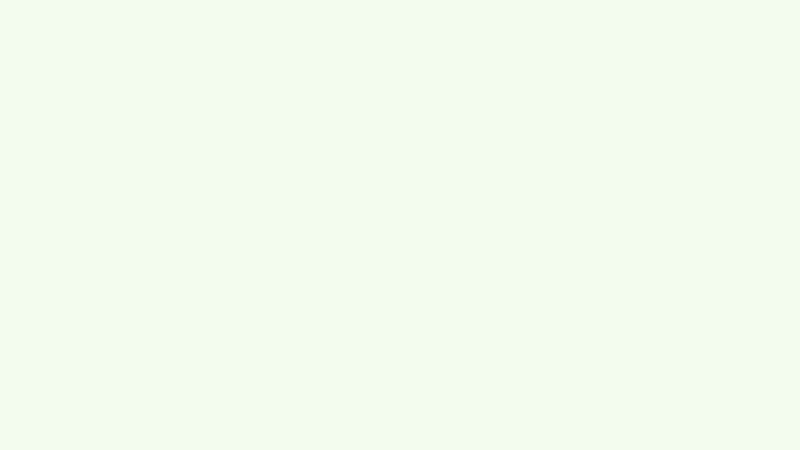
Somos Grin Frame, un estudio de animación 2D y 3D creativo, cercano y accesible, pensado para apoyar tanto a marcas locales como a personas que desean contar sus historias a través de la animación. Cada proyecto lo creamos junto a artistas humanos, priorizando la creatividad, la autenticidad y el diseño original.
Apostamos por procesos más humanos, evitando el uso de inteligencia artificial en la producción profesional, para desarrollar trabajos con identidad propia que reflejen verdaderamente la esencia de cada cliente. A través de una comunicación clara y honesta, buscamos contar historias con intención y generar conexiones reales.
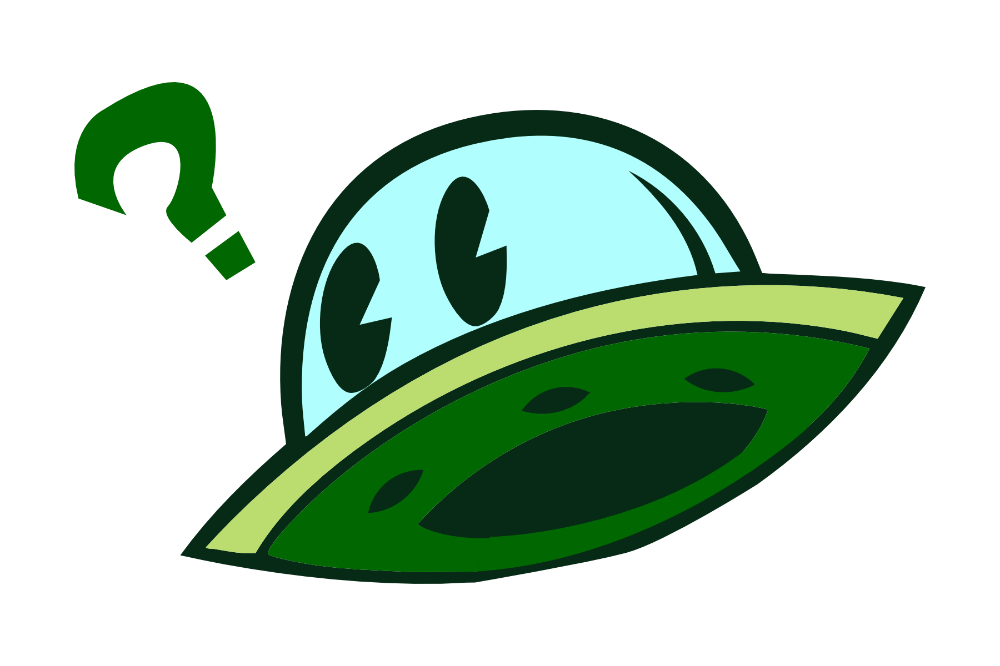
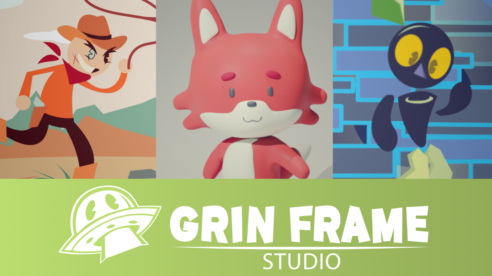
Crear animaciones 2D y 3D originales y accesibles que ayuden a marcas y personas a contar sus historias de manera auténtica. Ponemos en el centro la creatividad humana, el diseño con identidad y una comunicación cercana con cada cliente, pues las mejores ideas nacen del diálogo y la colaboración.
Convertirse en un estudio de animación reconocido por su su estilo, la creatividad y su enfoque humano, impulsando proyectos con identidad propia y demostrando que las historias hechas por personas tienen el poder de generar conexiones reales y profundas con el público.
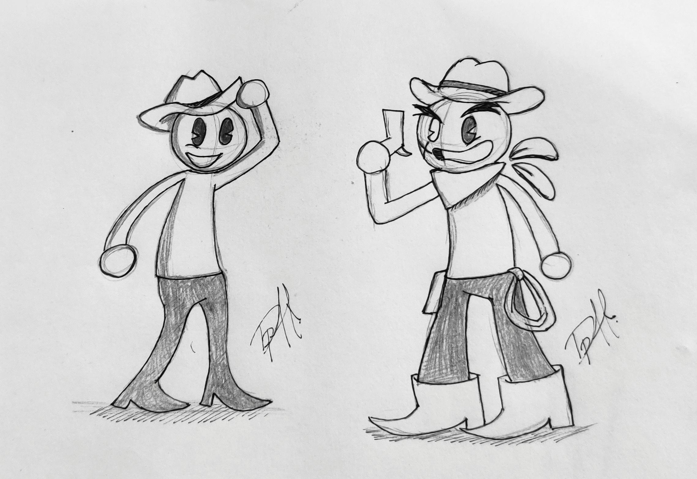
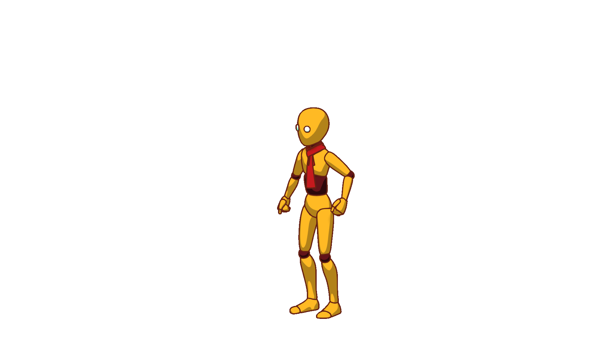
Desarrollamos animaciones en 2D y 3D adaptadas a las necesidades de cada proyecto, ya sea para publicidad, contenido digital o narrativa. Nuestro proceso inicia con la comprensión de tu idea y objetivos, seguido de la creación de conceptos visuales y pruebas de animación para definir el estilo.
A lo largo del desarrollo, compartimos avances contigo para asegurar que el resultado final refleje tu visión, logrando piezas con identidad propia y una conexión auténtica con tu audiencia.
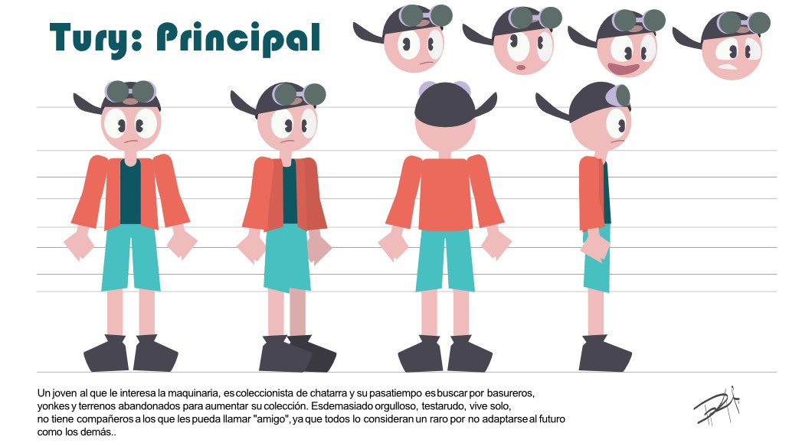
Diseñamos personajes originales desde cero, partiendo de la idea del cliente hasta su desarrollo completo. Iniciamos con bocetos y exploración de estilos, definiendo personalidad, estética y función dentro del proyecto.
Posteriormente, refinamos el diseño hasta su versión final, lista para animación o uso en distintos medios. Durante todo el proceso trabajamos de forma colaborativa, asegurando que cada personaje represente fielmente la esencia de la historia o marca.
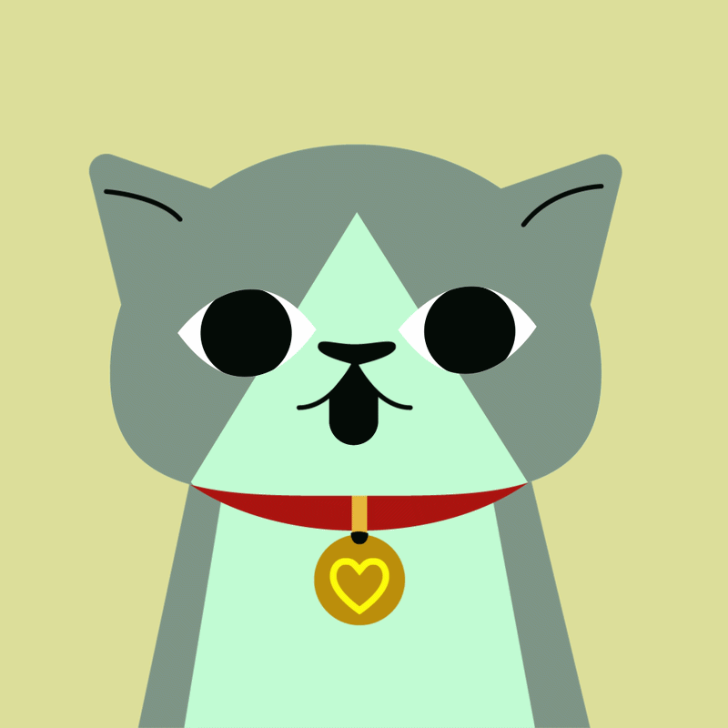
Creamos motion graphics enfocados en comunicar mensajes de forma clara, dinámica y atractiva, ideales para publicidad, redes sociales y contenido digital. Comenzamos definiendo el mensaje y estilo visual, seguido del diseño de elementos gráficos y pruebas de movimiento.
A lo largo del proyecto, compartimos avances y ajustes para lograr una pieza final efectiva, que no solo informe, sino que también conecte visualmente con el público.
Grin Frame Studio ofrece animación 2D y 3D hecha a la medida, con un enfoque creativo y humano que lo distingue de los estudios centrados en la producción masiva. Su forma de trabajo se basa en la colaboración y la comunicación directa con cada cliente, permitiendo desarrollar proyectos con identidad visual propia.
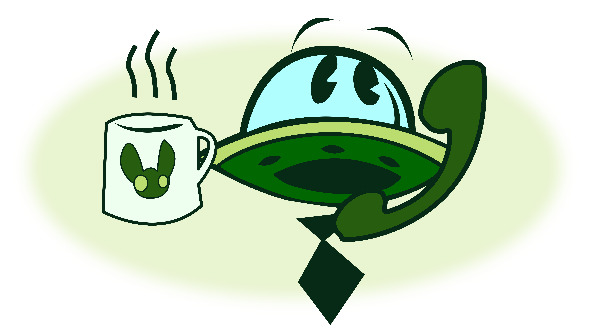
Todo comienza cuando nos compartes tu idea, necesidad o proyecto a través de nuestro formulario o
redes sociales. En esta etapa buscamos entender qué quieres lograr, el tipo de animación que
necesitas y el público al que te diriges.
También resolvemos tus primeras dudas y te orientamos
sobre cómo podemos trabajar juntos para llevar tu idea al siguiente nivel.
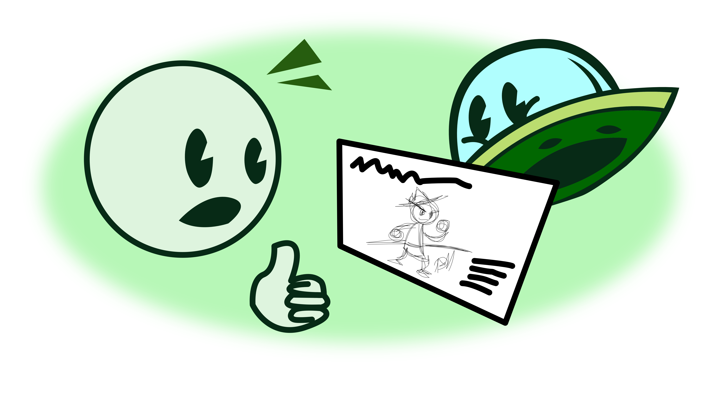
Una vez que conocemos tu proyecto, trabajamos contigo para definir el concepto, estilo visual y objetivos. Organizamos las ideas principales, proponemos enfoques creativos y establecemos una base clara que guiará todo el proceso. Aquí nos aseguramos de que la dirección del proyecto esté alineada con lo que buscas comunicar.
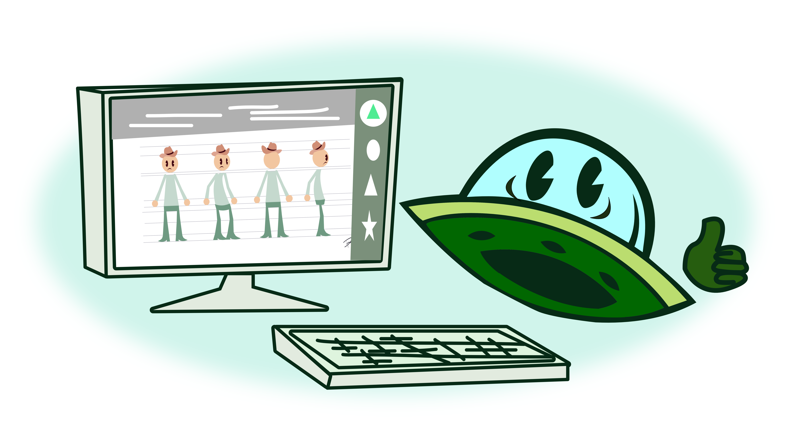
En esta etapa comenzamos a darle forma visual al proyecto mediante bocetos, storyboard o pruebas
iniciales de animación. Esto permite visualizar cómo se desarrollará la historia o el contenido
antes de producirlo.
Es un momento clave para realizar ajustes y asegurarnos de que todo esté
claro
antes de avanzar.
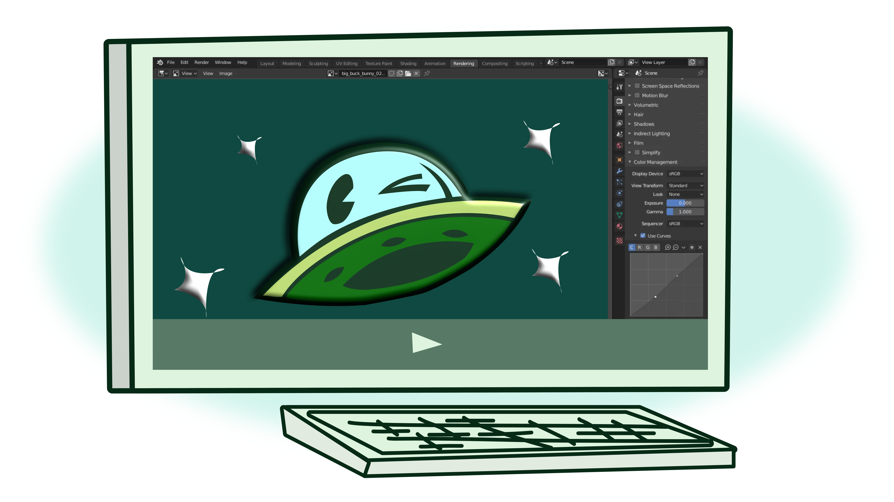
Con la base definida, iniciamos la animación del proyecto, desarrollando cada escena con atención al detalle, el movimiento y el estilo visual establecido. Durante esta fase se integran todos los elementos necesarios para construir la pieza final, manteniendo siempre la calidad y coherencia del proyecto.
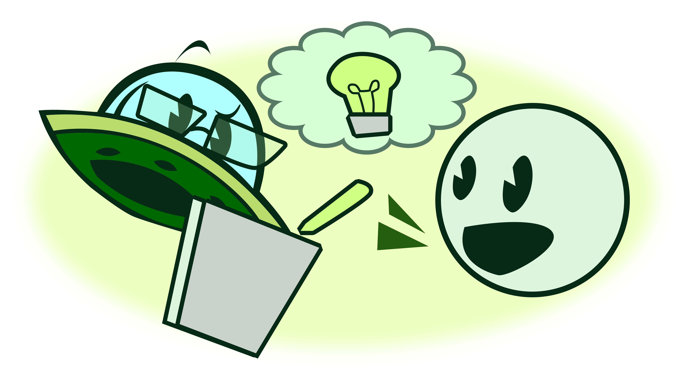
A lo largo del proceso compartimos avances contigo para recibir tu retroalimentación. Esto nos permite realizar ajustes y mejorar detalles, asegurando que el resultado final cumpla con tus expectativas y se mantenga fiel a la idea original.
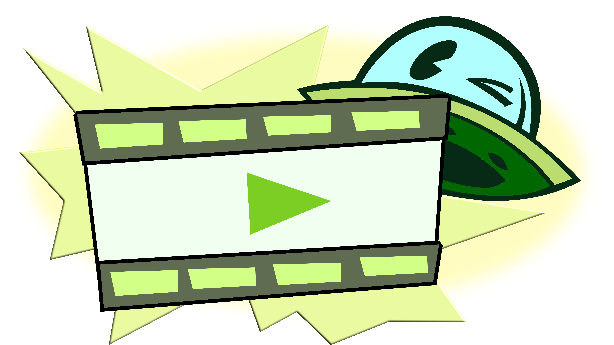
Una vez aprobado el proyecto, realizamos la entrega final en los formatos necesarios según su uso,
ya sea para redes sociales, publicidad u otros medios. Nos aseguramos de que el resultado esté listo
para ser utilizado y cumpla con los objetivos planteados desde el inicio.
El reconocimiento del proyecto puede incluir créditos visuales o menciones acordadas
previamente con el cliente.